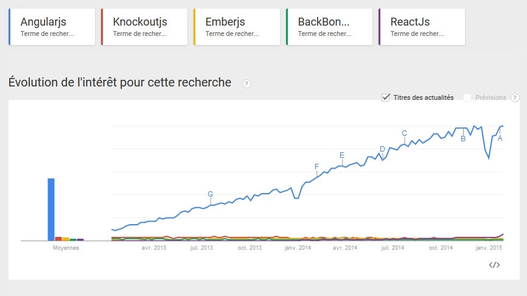

Angular JS
Superheroic Javascript MVW Framework
Angular JS
- Framework Javascript
- Développé par Google
- Pour faire des "SPA" (single page applications)
Tour d'horizon des frameworks Javascript majeurs
- Une multitude de framework existants. De nouveaux émergent régulièrement
- AngularJS
- Backbone.js
- React.js
- Meteor.js
- ...
- Forte communauté autour d'Angular, grosse percée du framework
Une image vaut mieux qu'un long discours...

Les forces d'Angular en quelques points
- Two way data-binding MVVM
- Injection de dépendances
- TDD, tests unitaires et tests e2e
- Framework agnostique
- Templating HTML
Les points noirs
- Pas assez de cadrage et de règles
- Syntaxe parfois bizarre
- Encore un peu jeune (angular 2.0 arrive)
- SEO
Focus sur le two way data-binding et analogie avec jQuery
On veut demander à l'utilisateur de saisir son nom et son prénom puis l'afficher à plusieurs endroits de la page
Avec jQuery
- On créé le formulaire
- On attache des évènements à chaque élement de form
- On code les fonctions qui réagissent aux évènements
- On récupère les données saisies
- On les affiche
Avec Angular
- On créé le formulaire
- On va se chercher un café
- On attends que le mec finisse avec jQuery :)